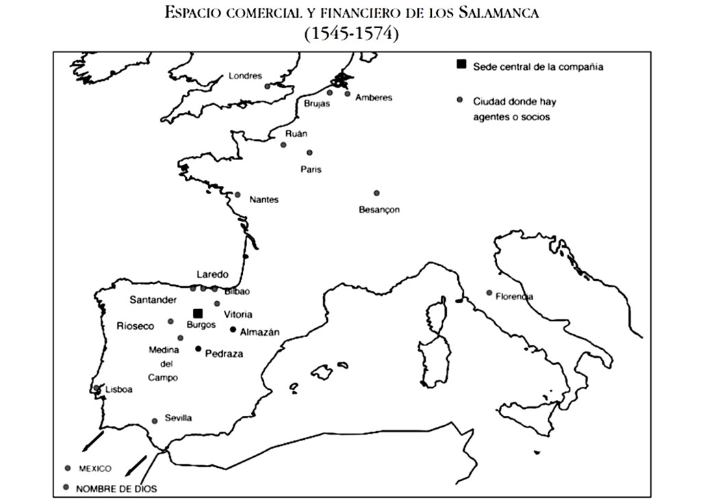

Esta página pertenece a
Marcos Fernández de
Salamanca y López.
Para ponerse en contacto
escriba al siguiente correo:
Contactar por e-mailLos orígenes de la familia Salamanca son oscuros, muy probablemente provenían de dicha provincia. Su aparición en la ciudad de Burgos se sitúa en la primera mitad del siglo XV, donde tenemos constancia de la aparición de los hermanos Francisco y García de Salamanca comerciando al por menor, especialmente con telas y carne, y arrendando rentas del municipio. De igual manera, sabemos que en esos años participaban activamente en las asambleas de las collaciones de la urbe.
El ascenso económico, social y político de los Salamanca se dio en parte gracias a la exportación de sacas de lana con destino a los telares flamencos (Francisco y García ya aparecen comerciando en la ciudad de Brujas en la segunda mitad del siglo XV). Pero la estrategia de la compañía no se ciñó exclusivamente al negocio lanero. Uno de sus mercados más importantes fue el inglés, hacia donde mandaban azúcar, especias y pastel procedentes de Lisboa, Madeira y Azores, al que sumaban envíos de vino de Burdeos y pastel de Toulouse. Sus agentes en Londres, Southampton y Bristol, en los años 1480-1510, fueron Alonso, Gonzalo y Pedro de Salamanca (hijos de Francisco). A los mercados atlánticos añadieron el italiano, asentándose Juan y Diego de Salamanca en Florencia a finales del siglo XV, donde se dedicaban a importar lana castellana e intercambiarla por ricas sedas y brocados de oro, que a su vez mandaban a la Península Ibérica y a otras partes de Europa.

El máximo representante de la empresa en Europa fue Pedro de Salamanca, llegando a ser consejero del rey inglés y embajador de los Reyes Católicos en la corte de Londres. Años más tarde, se trasladó a Brujas, donde en 1502 fue cónsul de la nación castellana, convirtiéndose en uno de los hombres más ricos e influyentes de Flandes. A partir de la década de 1520 la compañía de los Salamanca fue una de las más poderosas y ricas de Europa, posición que consolidaron durante el reinado de Carlos V. La contabilidad que se ha conservado de una de las ramas de la familia, la de la compañía de Miguel de Salamanca y Polanco y su primo García de Salamanca y Mazuelo permite reconstruir su actividad mercantil desde 1545 a 1574 (“Los libros de cuentas (1545-1574) de la familia Salamanca: mercaderes e hidalgos burgaleses del siglo XVI”, de José María González Ferrando).
Además de las sacas de lana con destino a Flandes, Ruán y Nantes, desde donde, a su vez, importaban paños y lienzos, los Salamanca comenzaron a comerciar con aceites de Andalucía, jabón, azúcares, pimienta y frutos secos de Portugal con Italia y Francia, tejidos hacia América, oro, plata y dinero americano, la importación de la cochinilla y otros negocios menores. El capital social de la compañía fue muy elevado, siendo en muchos años superior a 20 millones de maravedíes. Para gestionar la sociedad habían creado una extensa red de socios y agentes distribuidos por toda Europa y América, lo que les permitía estar muy bien informados de lo que acontecía en la economía de la época. Noticias que enviaban rápidamente a la sede central de la compañía, radicada en Burgos. Y cuando no contaban con personal propio recurrían a los servicios que le prestaba la comunidad mercantil castellana a título colectivo o alguno de sus miembros a título individual. Era una empresa jurídicamente independiente, pero que actuaba en red. De ahí su éxito en los negocios.
A las actividades puramente comerciales añadieron en el siglo XVI las financieras. Aunque tradicionalmente habían actuado como aseguradores de cargamentos de otros mercaderes, ahora algunos miembros de la familia completaron sus negocios con préstamos a la hacienda municipal de Burgos y, sobre todo, a la de la monarquía. Un fenómeno, por otra parte, común a otras grandes familias de mercaderes burgaleses como los Bernuy, Maluenda, Castro, etc. El caso más señalado es el de Jerónimo de Salamanca y Polanco, que residió en Amberes, donde fue responsable de los asuntos familiares en los Países Bajos, especialmente para las cuestiones comerciales. Pero, al mismo tiempo, se encargó desde 1533 de transferir desde Castilla, por cuenta de la compañía Salamanca, parte de las enormes cantidades de dinero que necesitaba el emperador Carlos V en la plaza brabanzona. A partir de 1562 regresó a España, convirtiéndose en uno de los mayores recaudadores de impuestos (seda de Granada, puertos secos de Portugal, almojarifazgo de Sevilla, el monopolio del mercurio y el tributo de los moros de Granada), en prestamista de dinero al rey (por valor de más de 167 millones de maravedíes) y en vendedor de juros durante el reinado de Felipe II.